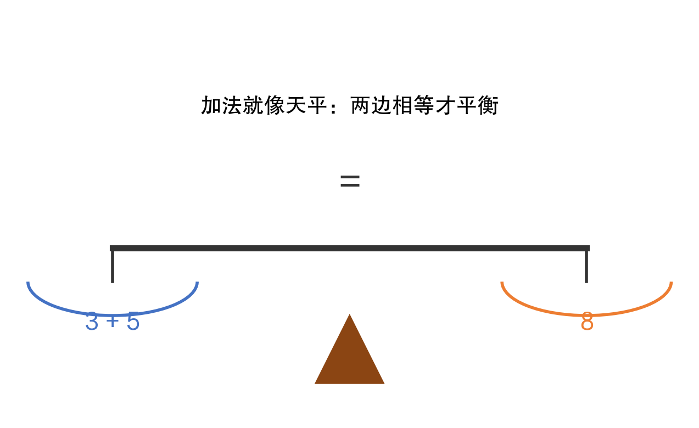
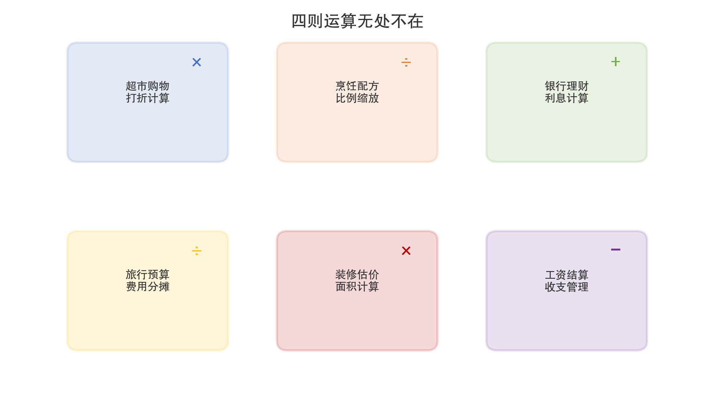
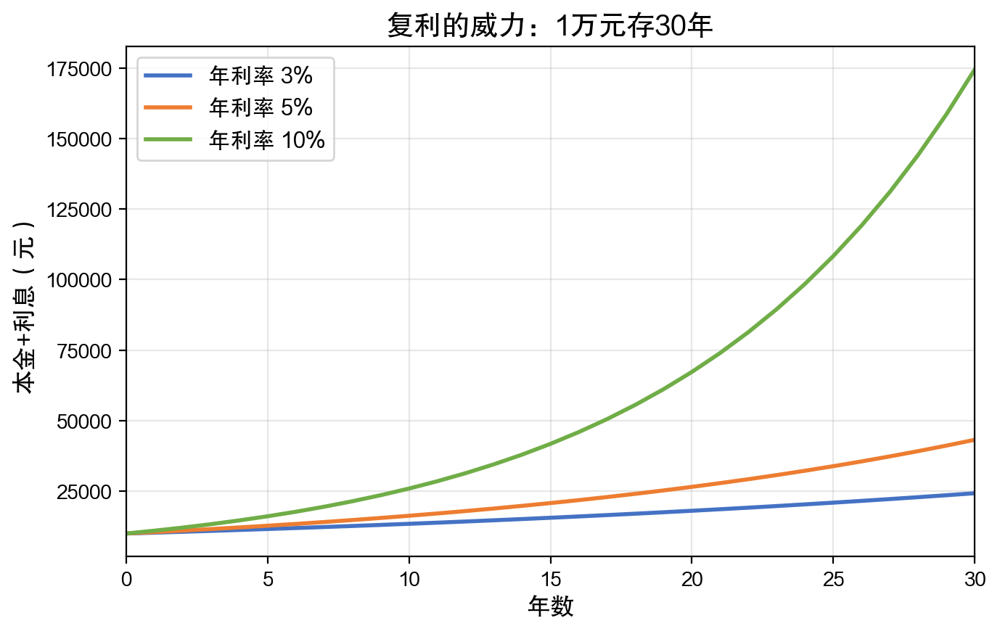
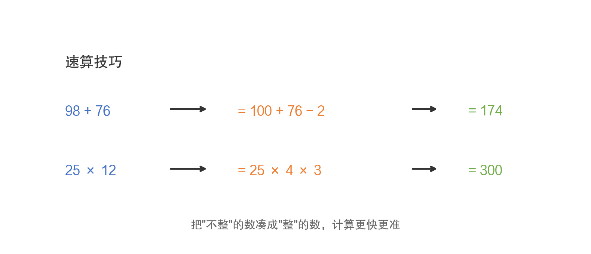

数学有什么用 · 第2期 / 共12期
小学篇(一)：四则运算不只是算账那么简单
很多家长觉得，小学数学无非就是加减乘除，以后买菜够用就行了。这种想法太局限了。四则运算是整座数学大厦的地基。没有扎实的四则运算基础，后面的分数、方程、函数全都学不好。
更重要的是，四则运算不仅仅是计算工具，它背后蕴含着重要的数学思想：等式的平衡、比例的关系、效率的优化。这些思想贯穿了从小学到博士的整个数学学习历程。
我们从最简单的加法说起。3加5等于8，这谁都知道。但你有没有想过，加法的本质是什么？
加法的本质，其实就是"合在一起"。把两堆东西合成一堆，就是加法。3个苹果和5个苹果放在一起，就是8个苹果。这看起来很简单，但这个"合在一起"的思想，其实贯穿了整个数学和科学。物理学里把两个力合成一个力，化学里把两种溶液混合，经济学里把不同来源的收入加总——本质上都是"加法"。
打个比方，加法就像一架天平。等号的左边是一个盘子，右边也是一个盘子。3+5放在左边，8放在右边，天平两端是平衡的。如图1-1所示。

图1-1 加法就像天平：两边相等才平衡
这个"天平"的思想非常重要。以后孩子学方程、学代数，其实就是在玩这架天平——保持两边平衡的同时，找出未知的那个数。比如：
x + 5 = 8，那么 x 是多少？
你看，这不就是"天平左边放了一个未知的东西和5，右边放了8，要保持平衡，那个未知的东西一定是3"吗？方程的本质，就是找平衡。从这个角度看，小学的加法和初中的方程是一脉相承的。
减法则反过来。减法是"拿走一部分"。8减5等于3，就是从8个苹果里拿走5个，还剩3个。减法还可以理解为"差距有多大"——小明有8块钱，小红有5块钱，他们差多少？8减5等于3块钱。这种"比较差异"的思想，在统计学里叫"偏差"，在质量管理里叫"公差"，都是从减法延伸出来的。
再举一个加法的生活案例。过年的时候，你给各位亲戚包红包：爸妈各2000元、岳父岳母各2000元、三个侄子侄女各500元、两个外甥各500元。总共要准备多少钱？2000×2 + 2000×2 + 500×3 + 500×2 = 4000 + 4000 + 1500 + 1000 = 10500元。这个简单的加法，其实就是一个"预算编制"——大公司的财务部门做的事情，本质上也是把各项支出加总起来。
减法在医学领域也很重要。医生给病人测量体温，37.5度减去正常体温36.5度等于1度——超过正常范围，可能在发烧。血压的"脉压差"也是一个减法：收缩压减去舒张压。这些看似简单的减法操作，是医学判断的基础。
如果说加减法是"一堆一堆地数"，那么乘除法就是"一组一组地算"。
3乘以4等于12。什么意思？就是"3个一组，数4组"，或者"把3重复加4次"。换句话说，乘法就是"重复的加法"。3+3+3+3=12，写成乘法就是3×4=12。当数字很大的时候，乘法比一个一个加要快得多。这就是乘法被发明出来的原因——效率。
有一个著名的故事。据说数学家高斯（Gauss）小时候，老师让全班算1+2+3+...+100。别的同学一个一个加，高斯几秒钟就算出来了：他发现1+100=101，2+99=101，3+98=101...一共50对，所以结果是101×50=5050。这就是乘法的威力——它把重复的加法变成了一步计算。
除法则是乘法的反面。12除以4等于3，意思是"12个东西分成4组，每组有3个"。除法的本质是"平均分配"。过年的时候，一家人分10个橘子，家里有4口人，每人分几个？10÷4=2.5个。你看，除法自然地引出了小数和分数的概念。
乘除法最重要的应用之一，就是"比例"和"倍数"。我们日常生活中到处都在用比例：
——做菜的时候，盐和水的比例是1比50，放多了太咸，放少了没味道；
——地图上标着"比例尺1:100000"，意思是图上1厘米代表实际1公里；
——商场打八折，就是原价乘以0.8，这也是乘法；
——高铁时速350公里，普通列车120公里，高铁是普通列车的将近3倍。
如图1-3所示，四则运算在日常生活中的应用场景远比你想象的要多。

图1-3 四则运算在生活中的应用场景
把钱存在银行里，银行会给你利息。假如你存了10000元，年利率是3%，那么一年后你能拿到多少钱？
10000 × (1 + 0.03) = 10300元
这是"单利"——只算一年的利息。但如果你把钱放在银行里不动，利息也会产生利息，这就是"复利"。第一年利息300元，第二年连本带息就是10300元，再乘以1.03得到10609元。利息比第一年多了9元——这9元就是"利息的利息"。
如图1-2所示，同样是1万块钱，不同利率下放30年，结果天差地别。

图1-2 复利的威力：1万元存30年
10%的年利率，30年后1万块能变成17万多！这就是爱因斯坦曾经说过的"复利是世界第八大奇迹"。复利的公式是：终值 = 本金 × (1 + 利率) 的 n 次方，其中 n 是年数。这里面用到了乘法和乘方——而乘方就是"反复做乘法"。
从简单的乘法出发，一步一步就能理解金融世界的核心概念。当你理解了复利，你就能看懂银行理财产品的宣传语，不会被"年化收益率"和"预期收益率"这些词汇唬住。
商场搞促销，"满300减50"和"打八五折"哪个更划算？这是一个典型的生活数学问题。假如你想买一件标价350元的衣服：
——满300减50：花350-50=300元；
——打八五折：花350×0.85=297.5元。
在这个例子里，打八五折便宜了2.5元。但如果标价恰好是600元呢？满300减50只能减一次（满600减100需要另外的规则），而打八五折是600×0.85=510元。具体哪个划算，取决于你买的东西价格。会用数学的人，在购物时永远不会吃亏。
做菜其实就是一场数学实验。一个面包配方可能写着：面粉500克，水325克，酵母5克，盐8克。这些数字之间有固定的比例关系：水是面粉的65%（这在烘焙中叫"水粉比"），酵母是面粉的1%，盐是面粉的1.6%。
如果你想做一半的量，每种材料都除以2。如果你想把一个4人份的菜谱放大到10人份，每种材料都要乘以2.5。理解了比例，你就可以自由地调整任何菜谱的份量，而不需要死记硬背每个数字。
每个月发工资的时候，你的银行卡里收到的钱，并不是合同上写的那个数字。因为要扣除社保、公积金和个人所得税。假如你的月薪是10000元：
——养老保险：10000 × 8% = 800元
——医疗保险：10000 × 2% = 200元
——公积金：10000 × 12% = 1200元
——个税（简化）：约 (10000 - 5000 - 2200) × 3% = 84元
——到手约：10000 - 800 - 200 - 1200 - 84 = 7716元
你看，从一个月薪数字到实际到手的金额，中间经过了好几步乘法（算比例）和减法（扣除各项）。如果不会这些计算，你就无法核实自己的工资条是否正确。有些人工作了好几年，从来没有核对过工资明细——这就是缺乏基本数学素养的表现。
日常生活中，我们经常需要做单位换算。1公里等于多少米？1斤等于多少克？这些换算全都是乘法或除法：
——1公里 = 1000米，3.5公里 = 3500米
——1斤 = 500克，2斤3两 = 500×2 + 50×3 = 1150克
——1英寸 = 2.54厘米，电视55英寸对角线 = 139.7厘米
出国旅行时，汇率换算也是乘法：1美元 = 7.2人民币，花了50美元就是50×7.2 = 360人民币。到了加油站，油价是每升8元，油箱加了35升，总价 = 8×35 = 280元。这些看似琐碎的计算，都是乘除法的日常应用。
计算不只是"会算"，还要"算得巧"。如图1-4所示，很多看似复杂的计算，用一些小技巧就能大大简化。

图1-4 速算技巧：凑整法
比如98+76，如果硬算需要进位，容易出错。但如果我们把98"凑整"成100，就变成了100+76-2=174，一步到位。再比如25×12，如果我们把12拆成4×3，就变成了25×4×3=100×3=300。
这些技巧的本质，是在利用数学的交换律、结合律、分配律——这些看起来很"教科书"的法则，其实是提高计算效率的法宝。
中国古代发明的"九九乘法表"，可能是人类历史上最成功的数学教育工具。在2000多年前的战国时期，中国人就已经在使用乘法口诀了——当时叫"九九歌"。有趣的是，古代的九九歌是从"九九八十一"倒着背到"二二得四"的，跟现在的顺序正好相反。
为什么要背乘法口诀？因为它把45个（1×1到9×9的不重复组合）基本乘法的结果存在你的大脑里，以后遇到任何多位数乘法时，都可以用这些基本结果来快速计算。这就像是一个"数据库"——预先存好基础数据，用的时候直接调取，比临时计算快得多。
全世界的孩子都要背乘法表（虽然不同国家的格式不同），但中国的九九乘法表因为利用了汉语的韵律特点（"三七二十一""四八三十二"），特别容易记忆。这是中国数学教育对世界的一大贡献。
有时候，精确计算反而不如粗略估算有用。比如在超市里，你的购物车里有十几样东西，总价是多少？你不会在心里精确地把每样东西的价格加起来，而是大致估算一下："大件的三四百，小件的加起来一百多，总共五百左右。"
这就是"估算"——用近似的数字快速得出大致结果。估算能力在日常生活和工作中非常重要：工程师估算项目成本，厨师估算食材用量，经理估算年度预算。精确计算可以交给计算器，但估算能力必须靠自己。
培养估算能力的方法很简单：把数字"凑整"再算。比如398×5约等于400×5=2000，实际是1990，误差不到1%。这种"先粗后精"的思维方式，在很多场合都比"一上来就精确计算"更高效。
四则运算——加、减、乘、除——看起来简单，但它们是一切数学的起点。理解了加法就理解了方程，理解了乘法就理解了比例和复利。就像学走路是为了以后能跑、能跳、能爬山一样，学四则运算是为了以后能做更复杂的数学。所以，下次孩子再问"学加减乘除有什么用"的时候，你可以告诉他：加减乘除是你理解这个世界的第一把钥匙。
《数学有什么用》系列 · 第2期 / 共12期
从买菜到人工智能的数学之旅 | 一本写给家长的数学科普
上一期：第1期 | 下一期：第3期
如果你觉得这篇文章对你有帮助，请分享给更多家长朋友